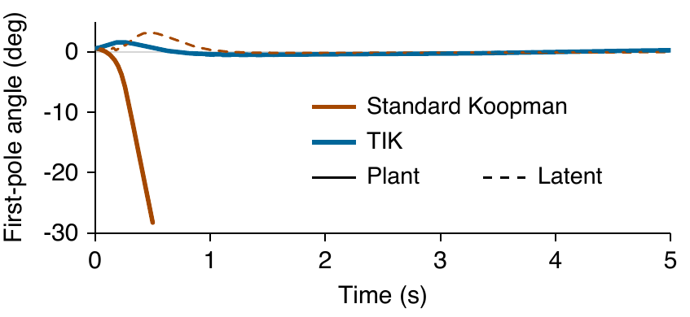
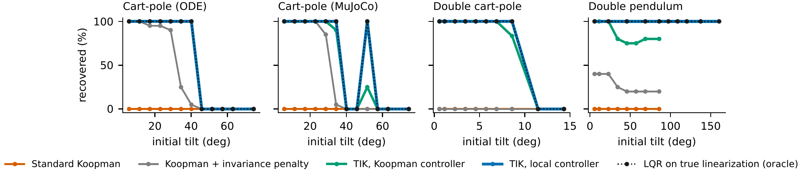

Making Koopman Control Guarantees Hold on Robots
Tangent-Invariant Koopman (TIK)
Robotics Institute, Carnegie Mellon University
The Paradox: Why Nominal Certificates Fail
A controller verified on an autonomous latent model frequently destabilizes the real physical plant.
1. Latent Loop (Model Rollout)
The controller feeds back its own predicted states:
z_{t+1} = (A - BK) z_t = A_{\mathrm{cl}} z_t
Nominal stability requires ρ(A_{\mathrm{cl}}) < 1.
2. Deployed Loop (Physical Robot)
The robot measures and re-encodes physical state at every step:
x_{t+1} = f(x_t, -K \Phi_\theta(x_t)), \quad F = A_f - B_f K J_\theta
Plant stability is governed by F, not A_{\mathrm{cl}}.

Theoretical Foundation: Tangent-Space Invariance
Let J_\theta = \partial\Phi_\theta/\partial x|_0 be the embedding's Jacobian. A Koopman model is tangent-invariant at the equilibrium if its first-order action matches the physical plant:
Guaranteed Certificate Transfer
Under tangent invariance, every physical eigenvalue of F is an eigenvalue of A_{\mathrm{cl}}. Thus, ρ(F) ≤ ρ(A_{\mathrm{cl}}): nominal stability guarantees physical stability.
Impossibility of Stable Liftings
At open-loop unstable equilibria (ρ(A_f) > 1), tangent invariance dictates ρ(A) > 1. Architectures constrained to ρ(A) ≤ 1 by construction cannot stabilize unstable plants.
Method: Tangent-Invariant Koopman (TIK)
TIK guarantees first-order tangent invariance by construction for any neural encoder without requiring simulator derivatives.
1. Local Offline Fit
Fit (\hat{A}_f, \hat{B}_f) via weighted least squares on logged transitions near the target. Completely data-driven.
2. Invariant Projection
Parameterize A = J_\theta \hat{A}_f J_\theta^+ + W P_\perp and B = J_\theta \hat{B}_f. Tangent invariance holds for any encoder and any W.
3. Data-Driven Certificate
Certify stability from offline data via the real stability radius r_{\mathbb{R}}(\hat{F}) and compute invariant terminal sets \Omega_c for MPC.
Empirical Highlights
Tested on four open-loop unstable benchmarks, constrained swing-up under strict compute budgets, and high-DoF robots.
1. Benchmark Stability at Unstable Equilibria
| Method | Cart-Pole (ODE) | Cart-Pole (MuJoCo) | Double Cart-Pole | Double Pendulum |
|---|---|---|---|---|
| Oracle Linear Model + MPC | 1/1 | 1/1 | 1/1 | 1/1 |
| Neural Model (MLP) + NMPC | 10/10 | 10/10 | 1/10 | 0/10 |
| Standard Koopman | 0/10 | 0/10 | 0/10 | 0/10 |
| Stable-by-Construction Liftings | 0/10 | 0/10 | 0/10 | 0/10 |
| TIK (Ours) | 10/10 | 10/10 | 10/10 | 10/10 |


2. Real-Time Constrained Dual-Mode MPC (0.25 ms)
| Predictor & Terminal Set | Swing-Up Success (%) ↑ | Recovery Success (%) ↑ | ||||||
|---|---|---|---|---|---|---|---|---|
| 2 ms | 1 ms | 0.5 ms | 0.25 ms | 2 ms | 1 ms | 0.5 ms | 0.25 ms | |
| Linear Model + MPPI, certified Ωc | 17 | 25 | 25 | 8 | 50 | 42 | 42 | 7 |
| Neural Network + MPPI, certified Ωc | 98 | 98 | 98 | – | 99 | 99 | 99 | – |
| Standard Koopman, latent terminal set | 17 | 15 | 6 | 4 | 18 | 15 | 4 | 4 |
| TIK (Ours), certified Ωc | 100 | 88 | 88 | 88 | 100 | 99 | 99 | 99 |
All 7,036 rollouts entering \Omega_c converged without constraint violations. At 0.25 ms, neural MPPI exceeds time, while TIK achieves 88% swing-up and 99% recovery.
3. Multi-DoF Robots
7-DoF Kinova Gen3 Manipulator
Solves condensed convex QPs around obstacles in 2.1 ms median solve time (100% reach at 5 ms).
35-D Unitree Go2 Quadruped
Multi-point posture recovery achieves 67%–74% success under impulse pushes, running 7.4× faster (0.83 ms) than neural NMPC.
Code & Reproducibility
The reference implementation is open-source at github.com/Walleclipse/tik-koopman.
git clone https://github.com/Walleclipse/tik-koopman.git cd tik-koopman pip install -e ".[plots,dev]" pytest -q
import tik
plant = tik.CartPole()
A_f, B_f = plant.linearize()
data = tik.collect(plant, n_traj=1500, horizon=40)
near = tik.collect(plant, n_traj=300, horizon=20, scale=0.02)
fit = tik.fit_local_linearization(*near.transitions(), radius=1.0)
standard = tik.train_standard(tik.KoopmanModel(4, 1), data)
model = tik.finetune_tik(standard, fit, data)
ctl = tik.KoopmanLQR.from_model(model)
print(f"Nominal certificate rho(A - BK): {ctl.latent_radius:.4f}")
print(f"Physical deployed rate rho(A_f - BfKJ): {ctl.deployed_radius(A_f, B_f):.4f}")
Citation
@article{abuduweili2027tik,
title = {Making {Koopman} Control Guarantees Hold on Robots},
author = {Abuduweili, Abulikemu and Liu, Changliu},
journal = {arXiv preprint},
year = {2027},
url = {https://github.com/Walleclipse/tik-koopman}
}